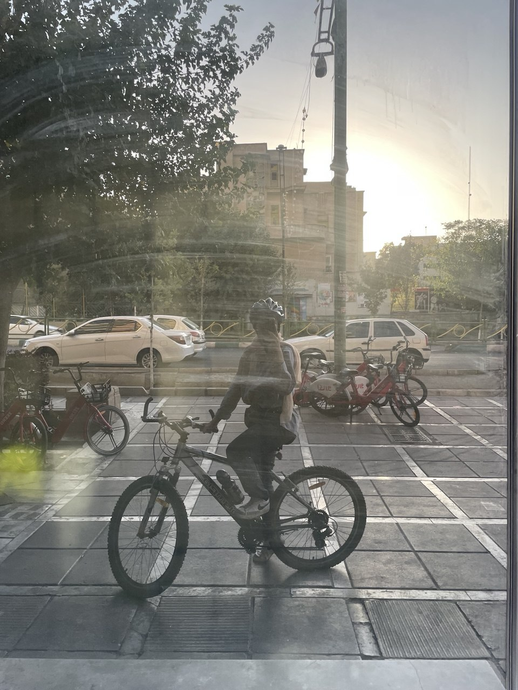

Product manager focused on fintech. I care about clear problems, honest metrics, and shipping things people actually use. When I'm not in a sprint, I'm on a bike, in the mountains, or holding a coffee.
From market research that shipped 6 new features at Tarjomic.
Discovery → scoping → release, across fintech and early-stage products.
Design, engineering, and international stakeholders across remote and hybrid setups.
Facilitated Scrum ceremonies, removed impediments, and worked with design, engineering, and international stakeholders to define and ship features. Ran usability testing and supported QA on new releases.
Own the product backlog end-to-end — from discovery and prioritization to release and iteration.
Built and shipped MVPs across multiple early-stage products. Led discovery, scoping, and sprint planning for parallel projects — turning fuzzy ideas into testable user stories.
Conducted market research that led to 6 new features and a 23% lift in adoption. Redesigned the website, improved user flows, and ran user surveys to surface pain points.
I studied Materials Science & Engineering at Iran University of Science & Technology, then moved into product — where I found the same instinct for systems, just applied to software instead of matter.
Today I work on fintech products. I like problems with real constraints: regulation, trust, edge cases, and users who notice when things are wrong. My favorite part of the job is turning a vague complaint into a scoped, shippable feature.
Focused on features that make money movement feel obvious and safe.
Friday rides are non-negotiable. The rest of the week is logistics.
Product, systems, and anything that explains why people do what they do.
I ride a lot — mostly on Fridays, mostly with other people. Group rides taught me more about coordination, pace, and reading a room than any meeting ever did.
I also love being in nature: foggy hillsides, quiet trails, the kind of morning where the city disappears behind the ridge. It resets my head better than any productivity system.
And yes — there is almost always a coffee in my hand. It's a personality trait at this point.

Friday · fog line